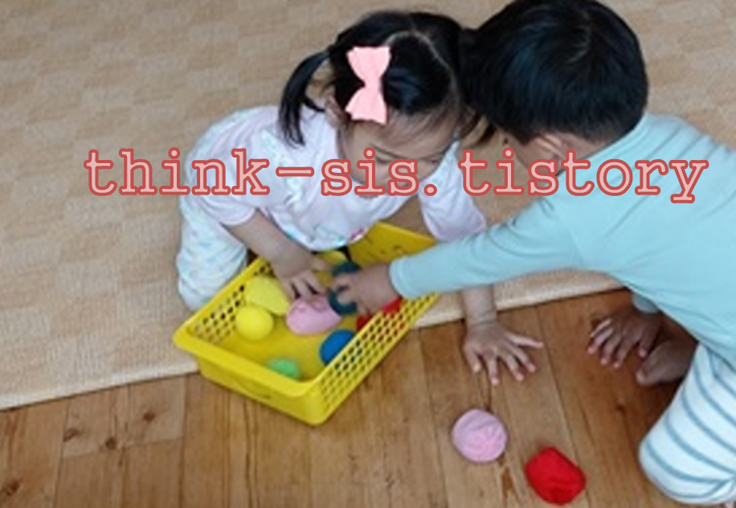

1. 놀이가 영아의 인지발달에 미치는 영향

1) 영아의 뇌는 가소성이 매우 크다.
긍정적인 영향은 뇌에 자극을 주고 부정적인 영향은 뇌의 활동을 저하시킨다고 한다. 영아들의 발달에 영향을 주는 요인으로는 영양, 보호, 환경, 자극 등이 있다. 최근 두뇌연구에 따르면 영아는 서로 얽힌 특정한 신경 회로들을 가지고 태어나는데 이것들은 타인과 상호작용을 통하여 강화된다. 영아가 웃으면 성인도 따라 웃고 영아가 울면 성인은 영아를 달래고, 성인이 까꿍 놀이를 하면 영아는 웃는다. 이러한 성인과 영아의 상호작용을 통하여 안전함과 안정감을 느낄 수 있게 해 줌으로써 영아의 발달을 더욱 촉진시킨다.
2) 한 사물을 다른 것으로 대체하여 표상하는 능력도 발달한다.
생후 2년 동안 영아들의 신체와 인지의 변화들은 급속히 일어나고 성인과 영아 사이에 놀이는 영아의 성장과 발달을 위한 기회를 제공한다. 영아는 자신의 주변에 있는 물건과 놀잇감을 가지고 물고 빨며 탐색하거나 놀이를 하면서 다양한 체험을 하고 이러한 경험을 바탕으로 지적발달이 점진적으로 이루어진다. 감각 운동적 놀이 행동을 반복하면서 새로운 행동을 학습하고 학습된 행동을 여러 상황 적용하면서 목적 달성을 위해 시행착오적 행동을 시도하는 등 지적 발달의 수준을 점차 높여 나간다. 아이는 놀잇감이나 사물을 조작하는 놀이 경험을 통하여 사물의 기능과 특성을 이해하고 대상 영속성의 개념도 형성하게 된다.
2. 놀이가 유아의 인지발달에 미치는 영향
1) 유아기는 놀이가 성숙되어 가는 과정에 있다.
피아제(piaget)는 이 시기를 전조작기라고 했다. 이 연령대의 특징은 물활론과 자기중심성이다. 자신들이 세상의 중심이라고 생각한다. 전조작기는 행동을 통해 확립된 생각을 재구성할 수 있는 능력이 시작되는 시기로 이런 특성들은 이 시기의 놀이에 큰 영향을 미친다.
유아기는 영아기에 비해 또래 집단과 함께 상호작용하며 다양한 놀이에 능동적으로 참여하여 경험의 폭을 좀 더 넓힘으로써 인지 발달이 촉진된다. 즉, 여러 가지 놀잇감이나 사물, 자연물을 가지고 노는 동안 여러 가지 물체의 무게, 질감, 색깔, 모양, 크기 등 물리적 지식을 학습하게 될 뿐만 아니라 다양한 논리적, 수리적 지식도 습득하는 등 놀이를 통하여 많은 것을 습득하고 배운다. 이러한 놀이를 통해 친구를 사귀고 즐거움을 느끼며 만족하고 성장하게 된다.
2) 놀이의 경험이 인지발달에 매우 중요한 영향을 미친다
유아는 놀이 중에 여러 가지 탐색 활동을 하면서 사물에 대한 이해력이 증진되어 문제해결력이 발달한다. 놀이 중에 새로운 사물을 접하게 되면 그 사물의 속성을 탐색하는 과정에서 시행착오를 거치면서 문제를 효과적으로 해결할 수 있다. 피아제에 의하면 놀잇감에 상징적 의미가 주어질 때 표상이 시작되는 것은 추상적으로 사고를 하고 있음을 의미하였다.
3) 놀이를 통한 구체적 사고에서 추상적 사고로의 전환 과정이다
비고츠키는 놀이에는 시각의 장과 의미의 장이 분리되어 있어서 사물과 격리된 사고를 할 수 있을 뿐 아니라 사물보다 사고에 근거한 행동도 가능하다고 보았다. 유아의 사고는 실제 사물에서 분리된 상태이며, 행동은 막대기에 대한 행동이 아니라 말에 대해 생각하는 것을 행동으로 나타내는 것이다. 이 때 막대기는 실제 말을 의미하는 것으로 전달하는 주축의 역할을 하게 된다. 유아는 처음에는 실제 사물과 유사한 사물을 상징놀이에 사용하지만 사고력이 발달됨에 따라 실제 사물과 거리가 먼 사물에도 상징적 의미를 부여한다. 이처럼 놀이를 하는 과정 중에는 사물의 용도나 속성 자체를 초월하여 추상적으로 생각할 수 있는 기회가 많기 때문에 다양한 자유 연상을 필요로 하는 문제해결력이 촉진된다.
4) 놀이는 인지 발달의 관계에 긍정적, 창의성을 증가시킨다
놀이는 정서적 발달과 사회적 학습의 기회를 제공해 주며 지적 이해를 가능하게 해준다.
첫째, 여러 가지 놀이를 하면서 수, 분류, 서열화, 공간, 시간, 보존 개념을 자연스럽게 학습할 수 있다.
둘째, 놀이 중에 접하는 새로운 사물이나 상황을 탐색하면서 확산적 사고 능력이 증진되고 문제해결력이 향상된다.
셋째, 사물이나 상황에 상징적 의미를 부여하는 놀이를 하면서 추상적 사고력이 증진된다.
넷째, 놀이를 하면서 다양한 정보를 쉽게 획득할 수 있는 놀이란 생활이며 자유로운 활동이다.
이와같이 놀이를 통하여 새로운 것을 접하고 인지하게 되면서 신체를 발달시키고 감각 능력과 다양한 기능을 형성해 간다. 또 놀이의 규칙이나 기술에 친숙해지고 놀이의 내용에 대해 알게 되며 새로운 시도를 함으로써 자신도 모르는 사이에 창의성이 증가하게 된다.
참고자료
김재은(1998), 아동의 인지발달, 창지사
조복희 외 2명(2016), 인간발달, 교문사
이현림 외 1명(2016), 인간발달과 교육, 교육과학사
2021.10.30 - [분류 전체보기] - 놀이는 신체적, 정서적, 인지발달의 필수적- 호기심과 창의성 향상
놀이는 신체적, 정서적, 인지발달의 필수적- 호기심과 창의성 향상
1. 놀이의 의의 엄마는 아이가 눈 뜨는 순간부터 잠들 때 잠을 자는 모습까지 하루 종일 관찰 아이는 태어날 때 두뇌의 90%를 영유아기에 형성하고 발달을 한다. 신경망의 발달은 걷고, 말하고, 학
think-sis.tistory.com